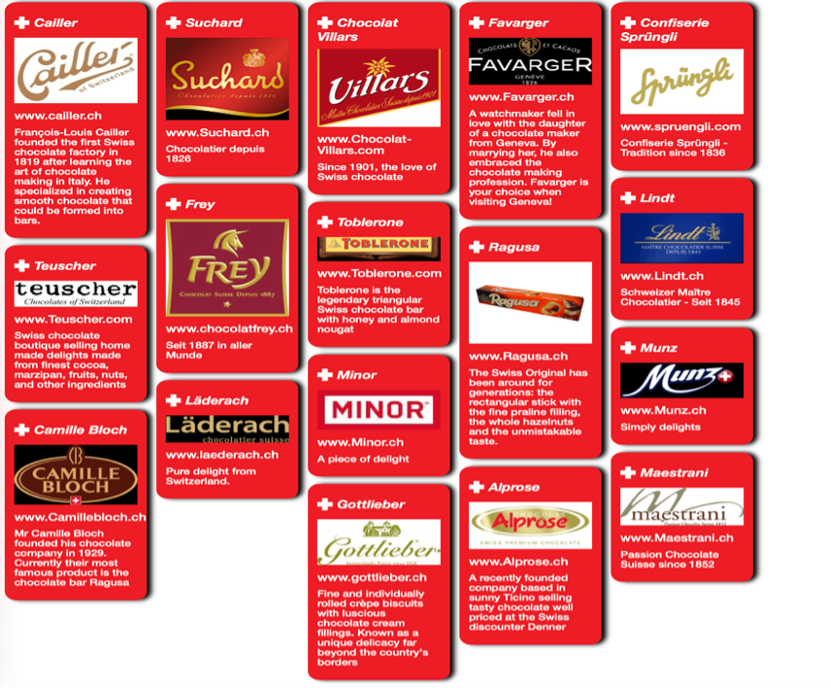
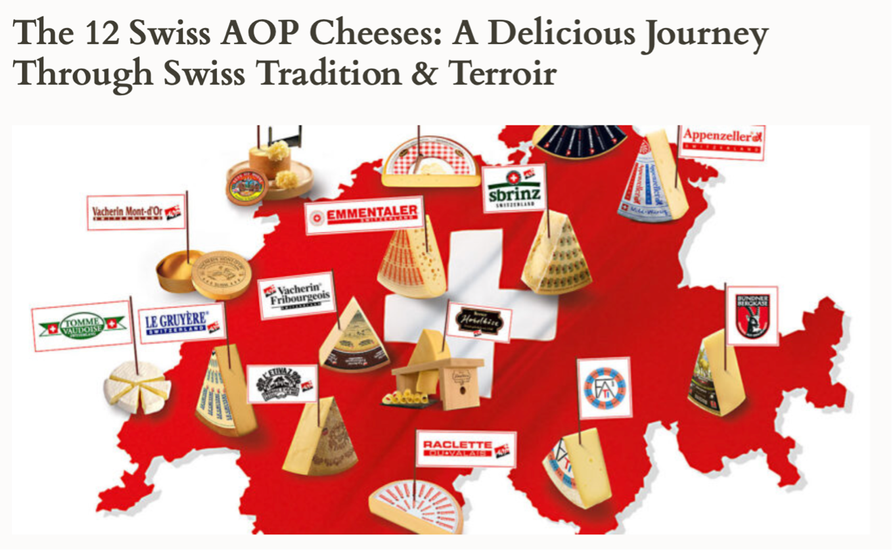
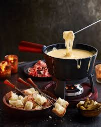

Switzerland is a pioneer of chocolate making. In 1819, François-Louis Cailler opened the country’s first mechanised chocolate factory, followed by Philippe Suchard in 1826. In 1875, Daniel Peter invented milk chocolate, and Rodolphe Lindt perfected the smooth, melt-in-the-mouth texture with his conching technique in 1879. Today, Swiss people are among the world’s biggest chocolate lovers, consuming 10–12 kg per person annually. In 2023 Switzerland exported $1.15Billion of chocolate making it the 9th largest exporter of chocolate out of 202 in the world.

The best known Swiss cheeses are of the class known as Swiss type cheese also known as Alpine cheeses, a group of hard or semi-hard cheeses with a distinct character, whose origins lie in the Alps of Europe although they are now eaten and imitated in most cheesemaking parts of the world. These include Emmental, Guuyère and Appenzeller, as well as many other traditional varieties from Switzerland and neighbouring countries with Alpine regions. Their distinct character arose from the requirements of cheese made in the summer on high Alpine grasslands (alpagein French), and then transported with the cows down to the valleys in the autumn, in the historic culture of Alpine transhumance. In Switzerland, cheese is more than food—it’s a ritual. From the snowy peaks of Valais to the rolling pastures of Fribourg, cheese brings people together. Traditionally the cheeses were made in large rounds or "wheels" with a hard rind, to provide longevity to the shelf-life. Specialities are Fondue, the bubbling pot of melted Guryère abd Vacherin, and Raclette scraped directly froam a wheel of cheese served with pickle and potatoe.
